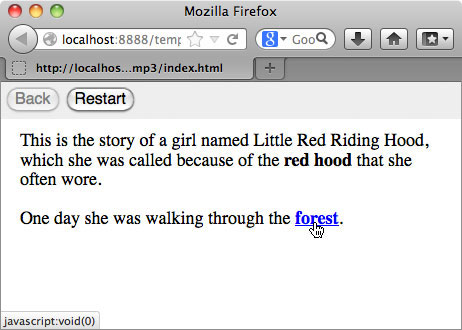
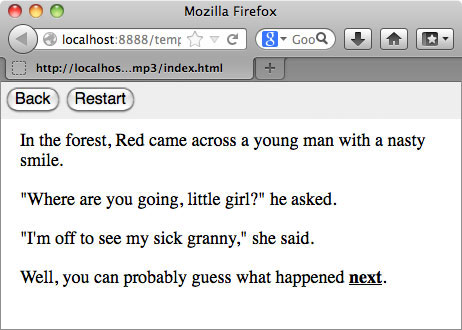

Basic concepts
From the reader's perspective, a HypeDyn story consists of passages of text which contain links, which appear as underlined text. By clicking on a link, the reader is making a choice, which may either lead to a new passage of text, or change the current passage of text. The choice may change how the reader experiences the story, or even what happens in the story, depending on how you, the author, have designed the story.
 
From the author's perspective, a HypeDyn story consists of four main components: nodes, links, rules and facts. As an author, you will be creating nodes, writing text for the nodes, creating links between nodes, and attaching rules to links and nodes to create behaviours.
Nodes
Nodes are text fragments which are normally displayed one at a time. A story consists of at least one node, and may potentially contain many nodes. These nodes form the basic material for your story. As a reader moves through the story, she will encounter different nodes, depending on the order in which you connect the nodes.
In addition to text, nodes can contain links and node rules.
Links
Links are attached to text in a node, usually appearing as underlined text. Links have link rules associated with them, which are evaluated when the link is clicked by the reader.
Rules
Rules may either be associated with a link (link rules) or a node (node rules). Rules contain conditions and actions. When a rule is evaluated, the conditions are checked, and if the conditions are satisfied, then the associated actions are triggered. Rules can be attached to links and to nodes.
The most basic type of link and rule combination is a link which contains a single rule, with no conditions and a single action which specifies which node will be shown when the reader clicks on the link. This is similar to the hyperlinks that are found on the web.
Facts
Facts represent values which can be stored for later use. Facts can be set in actions, and checked in conditions.